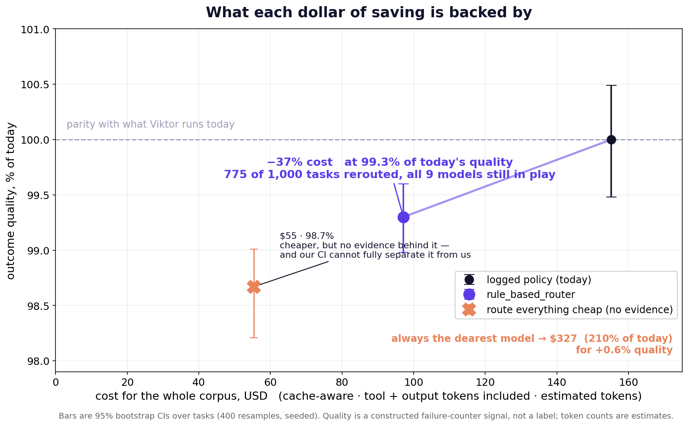

−37% of the bill at 99.3% of current outcome quality — with error bars, and we show you where it breaks
Harsha Sathish · Riya Biju · Pavin Sumathi Palanichamy · Prethebha Muthukumaran · Rohan Sanjay Patil
Viktor × TUM.ai Model Router Challenge · Munich, 23 Aug 2026
Input cost per task, holding outcome quality. It is the only axis this export supports honestly: no timings ship, so latency is unmeasurable, and no quality labels ship, so quality has to be constructed — we treat it as a constraint, not a target.
Risk signals, not prompt wording. The router reads the tool signature, whether a stakes tool was called, whether the last result was an error, and whether it is stuck in a retry loop. It starts on a price ladder and moves up or down by named steps. Every decision reports which rules fired.
Viktor does not route per task today — a human picks one model per workspace. So recurring cron jobs drifted across price tiers on their own: 90 job families, 69 of them on two or more tiers. Same job, different model. That accident is what lets us measure a model that never ran.

vs the starter baseline: $39 cheaper AND +0.4pp quality — strictly better on both axes, not cheaper instead of better.
logged $155.23 · baseline $136.53 (88%) · ours $97.16 (62.6%) at 99.30%, 95% CI [98.98, 99.60] · 775/1000 rerouted, all nine models still in play · always-dearest $326.65 (210%) for +0.6%
$155.23 → $97.16 · 62.6% of the bill at 99.3% of current quality
beats the starter baseline on cost and quality · 775/1000 tasks rerouted
Known weakness: our estimator cannot separate us from routing everything cheap on quality alone — we say so before you ask. Next: judge-model rescoring on the segments where the two policies disagree, to turn a design argument into a measured one.